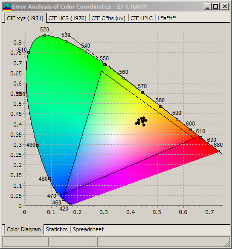
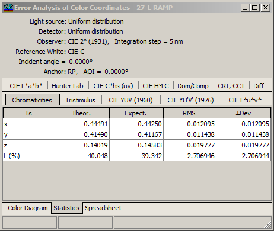
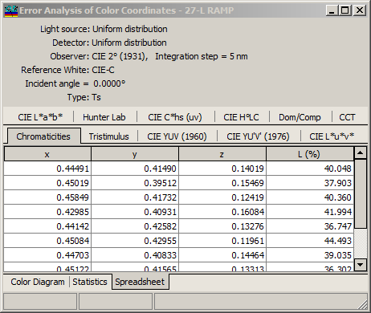

Color Error Analysis
Color Error Analysis
Navigation: OptiLayer Menu Commands > Analysis Menu > Errors Analysis >
Color Error Analysis
` <idh_error_analysis_results.html>`__ ` <idh_error_analysis.html>`__ ` <electric_field_error_analysis.html>`__
If “Include Color Analysis” is selected in the Error Analysis Characteristics dialog, then an additional “Error Analysis of Color Coordinates” window is displayed.

In this window, representations of the color characteristics of random designs are shown. Statistical values (Theoretical Value, Mathematical Expectation, RMS, and Deviation Corridor) are displayed on the Statistics tab of this window.


Note: If the CRI option was active, CRI statistical values are also computed.
The Spreadsheet tab represents the color characteristics of all designs randomly generated during Error Analysis.
